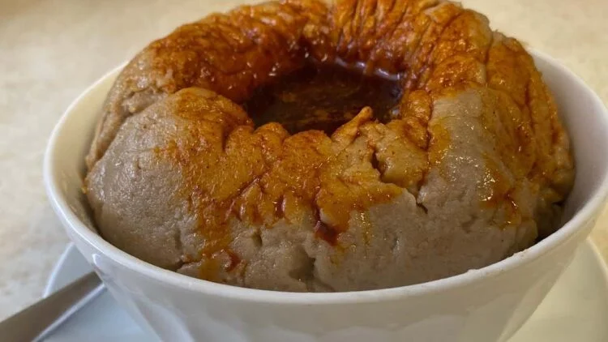

Genfo

Description
Genfo is a thick, doughy porridge made from either wheat, barley, or maize flour and served, and enriched with berbere and niter kibbeh. One of the most unique features of Genfo is how it looks. When served, Genfo has a deep hole carved right in the middle where a dipping sauce made from a mixture of berbere and niter kibbeh is poured in. In Ethiopia, Genfo is customarily given to pregnant women and recovering new mothers as it is easily digestible, easy to make, as well as a nutrient-rich food source that helps them heal and regain strength quickly.
Genfo can be shared or consumed individually, either by hand or using a spoon.
Ingredients
- wheat flour
- niter kibbeh (Ethiopian clarified butter)
- berbere
- cardamom
- water
Steps
- Start by adding the cardamom to the flour and mix.
- Boil the water then start adding the flour mix slowly while reducing the heat, stirring thoroghly so as to avoid any lumps from forming and until the mix moistenes well enough.
- Then transfer the Genfo to a mid-sized bowl, and create a hole right in the middle.
- Melt the Niter Kibbeh, and mix with the berbere, then pour the mix into the hole you created in the middle of the Genfo.
- Finally, pour the spicy liquid into the hole you’ve hollowed out in the Genfo and serve while still hot.